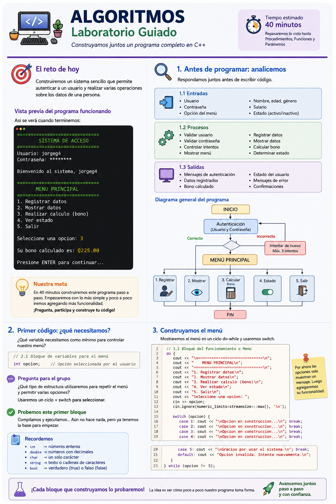
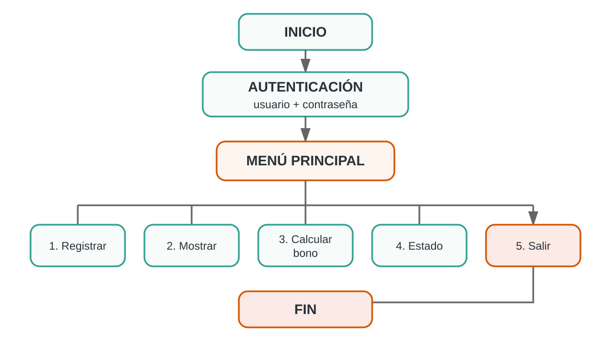
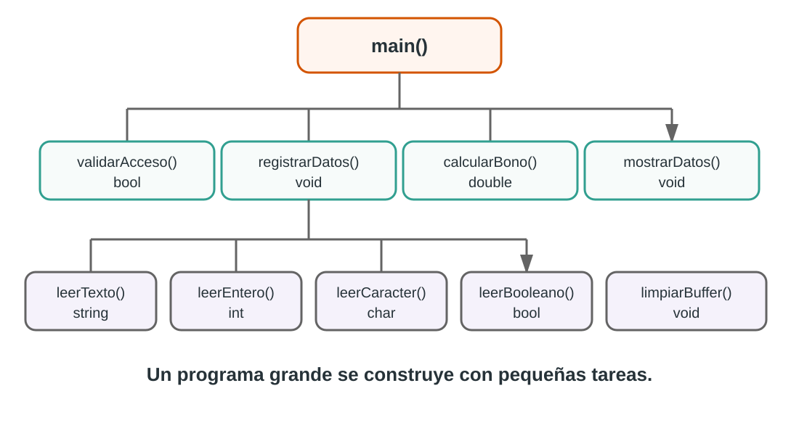

Laboratorio guiado: desarrollo de una solución
Repaso integrador: variables, decisiones, ciclos, procedimientos, funciones, parámetros y validaciones
El reto de hoy
Una pequeña empresa necesita un programa en C++ para controlar el acceso a un sistema y registrar información básica de una persona.
Para ingresar, el usuario deberá proporcionar un nombre de usuario y una contraseña. El sistema deberá comprobar que las credenciales sean correctas y permitirá un máximo de tres intentos. Si los tres intentos son incorrectos, el acceso será bloqueado y el programa finalizará.
Cuando el acceso sea correcto, el sistema mostrará un menú con las siguientes opciones:
- Registrar datos.
- Mostrar los datos registrados.
- Calcular un bono.
- Consultar el estado de la persona.
- Salir.
Para registrar a una persona se solicitará:
- nombre completo;
- edad;
- género;
- salario;
- estado activo o inactivo.
El programa deberá validar las entradas para evitar datos incorrectos. Por ejemplo, no deberá aceptar texto cuando se espera un número ni valores diferentes a los permitidos en las opciones que correspondan.
Para calcular el bono se utilizarán las siguientes reglas:
- si la persona tiene menos de 50 años, el bono será del 5 % del salario;
- si tiene 50 años o más, el bono será del 10 % del salario.
El menú deberá permanecer disponible hasta que el usuario decida salir.
Leamos el problema y respondamos entre todos:
- ¿Cuáles son las entradas?
- ¿Cuáles son los procesos?
- ¿Cuáles son las salidas?
- ¿Qué tipos de variables necesitaremos?
- ¿Dónde tendremos que tomar decisiones?
- ¿Qué partes deberán repetirse?
Todavía no programemos. Primero entendamos qué debemos construir.
1. Comprobemos nuestro análisis
Ahora sí, comparemos nuestras respuestas con una representación general de la solución.
¿Contemplamos todo? ¿Qué nos hizo falta?
Veamos el problema completo

Observemos la infografía y revisemos nuestras respuestas:
- ¿Identificamos todos los datos que necesita el programa?
- ¿Reconocimos que necesitaremos validaciones?
- ¿Detectamos que habrá un menú?
- ¿Pensamos en funciones y procedimientos?
- ¿Qué elemento no habíamos considerado?
Ahora veamos el flujo de la solución
La infografía nos muestra qué construiremos.
El diagrama de flujo nos ayudará ahora a comprender cómo funcionará.

Antes de continuar, identifiquemos:
- dónde inicia el programa;
- qué debe ocurrir antes de mostrar el menú;
- dónde existen decisiones;
- qué partes se repiten;
- cuándo termina el programa.
Con el problema entendido, ahora sí comenzamos a construir código.
2. Primer código: ¿qué necesitamos para controlar el menú?
Si todavía no hemos construido ninguna funcionalidad, ¿qué variable necesitamos como mínimo para saber qué opción seleccionó el usuario?
int opcion;Recordemos:
| Tipo | Uso |
|---|---|
int |
números enteros |
double |
números con decimales |
char |
un carácter |
string |
texto |
bool |
verdadero o falso |
3. Construyamos el menú
Preguntemos:
- ¿Qué estructura permite repetir instrucciones?
- ¿Qué estructura permite elegir entre varias opciones?
- ¿Cuándo debe terminar nuestro menú?
Primera versión:
#include <iostream>
using namespace std;
int main() {
int opcion;
do {
cout << "\n==============================" << endl;
cout << " MENU PRINCIPAL" << endl;
cout << "==============================" << endl;
cout << "1. Registrar datos" << endl;
cout << "2. Mostrar datos" << endl;
cout << "3. Realizar calculo (bono)" << endl;
cout << "4. Ver estado" << endl;
cout << "5. Salir" << endl;
cout << "Seleccione una opcion: ";
cin >> opcion;
limpiarBuffer();
switch (opcion) {
case 1:
cout << "\nOpcion en construccion..." << endl;
break;
case 2:
cout << "\nOpcion en construccion..." << endl;
break;
case 3:
cout << "\nOpcion en construccion..." << endl;
break;
case 4:
cout << "\nOpcion en construccion..." << endl;
break;
case 5:
cout << "\nGracias por usar el sistema." << endl;
break;
default:
cout << "\nOpcion invalida." << endl;
}
} while (opcion != 5);
return 0;
}Probemos este primer bloque
Compilemos y ejecutemos.
- ¿Se repite el menú?
- ¿Funciona cada
case? - ¿Qué ocurre si escribimos
9? - ¿Qué ocurre al seleccionar
5?
Todavía no hace mucho, pero ya tenemos una base funcional.
4. ¿Qué datos necesita la persona?
Si la opción 1 debe registrar información, ¿qué variables necesitamos y de qué tipo debería ser cada una?
Como ahora utilizaremos variables de tipo string, agregamos una nueva librería al inicio del programa:
#include <string>Nuestra cabecera queda así:
#include <iostream>
#include <string>
using namespace std;Ahora, dentro de main() y antes del do...while del menú, agregamos las variables de la persona:
string nombre;
int edad;
char genero;
double salario;
bool activo;
bool datosRegistrados = false;¿Para qué sirve datosRegistrados?
Nos permitirá evitar que el usuario intente mostrar o calcular información antes de haber registrado los datos.
5. Provocamos un problema
Supongamos que hacemos esto:
cout << "Ingrese edad: ";
cin >> edad;Ahora escribamos:
Ingrese edad: JorgeEl programa esperaba un entero y recibió texto.
Entonces aparece una nueva necesidad:
no podemos confiar en que todas las entradas serán correctas.
6. Construyamos nuestras validaciones
Antes de escribir las funciones de validación debemos preparar correctamente la parte superior de nuestro programa.
6.1 Actualicemos las librerías
Para las validaciones necesitaremos dos librerías nuevas:
#include <limits> // numeric_limits: ayuda a limpiar el buffer
#include <cctype> // toupper: permite convertir caracteres a mayúsculaHasta este momento, la cabecera de nuestro programa debe quedar así:
#include <iostream>
#include <string>
#include <limits>
#include <cctype>
using namespace std;Si las funciones de validación estarán escritas después de main(), ¿cómo sabrá C++ que existen cuando las llamemos desde el programa principal?
Necesitamos declarar sus prototipos antes de main().
Un prototipo le informa al compilador:
- el nombre de la función;
- el tipo de dato que devuelve;
- los parámetros que recibe.
Agregamos debajo de using namespace std;:
// Prototipos de validación
void limpiarBuffer();
int leerEntero(string mensaje);
double leerDecimal(string mensaje);
string leerTexto(string mensaje);
char leerCaracter(string mensaje);
bool leerBooleano(string mensaje);Nuestra estructura, por ahora, debe verse así:
#include <iostream>
#include <string>
#include <limits>
#include <cctype>
using namespace std;
// Prototipos de validación
void limpiarBuffer();
int leerEntero(string mensaje);
double leerDecimal(string mensaje);
string leerTexto(string mensaje);
char leerCaracter(string mensaje);
bool leerBooleano(string mensaje);
int main() {
// Variables y menú...
return 0;
}
// Aquí escribiremos las funciones completasCada vez que creemos una nueva función o procedimiento que estará escrito después de main(), primero agregaremos su prototipo en la parte superior.
Así podremos compilar y probar cada bloque antes de continuar.
6.2 Procedimiento para limpiar el buffer
void limpiarBuffer() {
cin.clear();
cin.ignore((numeric_limits<streamsize>::max)(), '\n');
}Preguntemos:
- ¿Recibe parámetros? → No.
- ¿Devuelve un valor? → No.
- ¿Realiza una tarea? → Sí.
Por eso utilizamos void.
6.3 Validar un entero
int leerEntero(string mensaje) {
int valor;
while (true) {
cout << mensaje;
if (cin >> valor) {
limpiarBuffer();
return valor;
}
cout << "Error: debe ingresar un numero entero." << endl;
limpiarBuffer();
}
}Preguntemos:
- ¿Qué recibe? → un
string. - ¿Cómo se llama ese dato recibido? → parámetro.
- ¿Qué devuelve? → un
int.
6.4 Validar un decimal
double leerDecimal(string mensaje) {
double valor;
while (true) {
cout << mensaje;
if (cin >> valor) {
limpiarBuffer();
return valor;
}
cout << "Error: debe ingresar un numero valido." << endl;
limpiarBuffer();
}
}6.5 Validar texto
string leerTexto(string mensaje) {
string texto;
do {
cout << mensaje;
getline(cin, texto);
if (texto.empty()) {
cout << "Error: el texto no puede estar vacio." << endl;
}
} while (texto.empty());
return texto;
}6.6 Validar un carácter
char leerCaracter(string mensaje) {
char valor;
while (true) {
cout << mensaje;
cin >> valor;
limpiarBuffer();
valor = toupper(valor);
if (valor == 'M' || valor == 'F') {
return valor;
}
cout << "Error: ingrese M o F." << endl;
}
}6.7 Validar un valor lógico
En lugar de pedir al usuario que escriba true o false, utilizaremos una entrada más natural: S/N.
bool leerBooleano(string mensaje) {
char respuesta;
do {
cout << mensaje << " (S/N): ";
cin >> respuesta;
limpiarBuffer();
respuesta = toupper(respuesta);
if (respuesta != 'S' && respuesta != 'N') {
cout << "Error: ingrese S o N." << endl;
}
} while (respuesta != 'S' && respuesta != 'N');
return respuesta == 'S';
}leerBooleano() recibe un string, internamente utiliza un char y finalmente devuelve un bool.
¡Estamos conectando varios conceptos en una sola función!
7. Hagamos funcionar la opción Registrar
Ya tenemos:
- las librerías necesarias;
- las variables;
- los prototipos de validación;
- y las funciones completas escritas después de
main().
Ahora sí podemos utilizarlas desde el menú sin que el compilador indique que son funciones desconocidas.
Reemplazamos el mensaje "Opcion en construccion..." del case 1.
case 1:
nombre = leerTexto("Nombre completo: ");
edad = leerEntero("Edad: ");
genero = leerCaracter("Genero (M/F): ");
salario = leerDecimal("Salario: Q");
activo = leerBooleano("Usuario activo");
datosRegistrados = true;
cout << "\nDatos registrados correctamente." << endl;
break;Probemos otra vez
Intentemos deliberadamente:
- escribir letras en la edad;
- dejar vacío el nombre;
- escribir
Xen género; - escribir texto en salario;
- responder algo diferente de
SoN.
Nuestro programa ya empieza a defenderse de entradas incorrectas.
8. ¿Llenamos main() de instrucciones?
Podríamos colocar todos los cout dentro del case 2.
Pero acabamos de aprender otra forma de organizar el programa.
Como vamos a crear un nuevo procedimiento y lo escribiremos después de main(), primero agregamos su prototipo junto a los anteriores:
void mostrarDatos(string nombre, int edad, char genero,
double salario, bool activo);Primero el prototipo → luego usamos el procedimiento → después escribimos su implementación completa.
Si una tarea solamente debe mostrar información y no necesitamos recibir un resultado, ¿podemos convertirla en un procedimiento?
void mostrarDatos(string nombre, int edad, char genero,
double salario, bool activo) {
cout << "\n==============================" << endl;
cout << " DATOS REGISTRADOS" << endl;
cout << "==============================" << endl;
cout << "Nombre : " << nombre << endl;
cout << "Edad : " << edad << endl;
cout << "Genero : " << genero << endl;
cout << "Salario: Q" << salario << endl;
cout << "Activo : " << (activo ? "Si" : "No") << endl;
}Y nuestro case 2 queda mucho más limpio:
case 2:
if (datosRegistrados) {
mostrarDatos(nombre, edad, genero, salario, activo);
}
else {
cout << "\nPrimero debe registrar los datos." << endl;
}
break;9. Ahora necesitamos obtener un resultado
La opción 3 calculará un bono.
Antes de utilizar la nueva función agregamos su prototipo en la parte superior:
double calcularBono(double salario, int edad);Regla sencilla:
- edad menor de 50 años → 5 %;
- edad de 50 años o más → 10 %.
¿Procedimiento o función?
Necesitamos que el cálculo nos devuelva un valor, por lo que construiremos una función.
double calcularBono(double salario, int edad) {
double porcentaje;
if (edad >= 50) {
porcentaje = 0.10;
}
else {
porcentaje = 0.05;
}
return salario * porcentaje;
}Ahora el case 3:
case 3:
if (datosRegistrados) {
double bono = calcularBono(salario, edad);
cout << "\nBono calculado: Q" << bono << endl;
}
else {
cout << "\nPrimero debe registrar los datos." << endl;
}
break;10. Consultemos el estado
Primero declaramos su prototipo:
void mostrarEstado(bool activo);Luego construimos el procedimiento completo después de main():
void mostrarEstado(bool activo) {
if (activo) {
cout << "\nEl usuario se encuentra ACTIVO." << endl;
}
else {
cout << "\nEl usuario se encuentra INACTIVO." << endl;
}
}Y completamos:
case 4:
if (datosRegistrados) {
mostrarEstado(activo);
}
else {
cout << "\nPrimero debe registrar los datos." << endl;
}
break;11. Nuestro programa funciona… ¿pero cualquiera puede entrar?
Ahora agregaremos seguridad.
Primero agregamos los prototipos de las funciones de autenticación:
bool validarUsuario(string usuario);
bool validarPassword(string usuario, string password);Luego agregamos, dentro de main(), las variables necesarias:
string usuario;
string password;
int intentos = 0;
bool acceso = false;11.1 Validar usuario
bool validarUsuario(string usuario) {
return usuario == "mariojdi3" ||
usuario == "jorgeg4" ||
usuario == "raulc13";
}11.2 Validar usuario y contraseña juntos
bool validarPassword(string usuario, string password) {
if (usuario == "mariojdi3" &&
password == "myHouseisntalone1289") {
return true;
}
if (usuario == "jorgeg4" &&
password == "aSushiRestaurant3456") {
return true;
}
if (usuario == "raulc13" &&
password == "watermelonandOrange") {
return true;
}
return false;
}No basta con comprobar que la contraseña existe.
Debemos comprobar que esa contraseña corresponde a ese usuario.
Aquí tenemos una función que recibe dos parámetros.
12. Control de intentos
Antes de agregar la autenticación al flujo principal, nuestra zona de prototipos ya debe verse así:
// Prototipos de validación
void limpiarBuffer();
int leerEntero(string mensaje);
double leerDecimal(string mensaje);
string leerTexto(string mensaje);
char leerCaracter(string mensaje);
bool leerBooleano(string mensaje);
// Prototipos de autenticación
bool validarUsuario(string usuario);
bool validarPassword(string usuario, string password);
// Prototipos de procesos
void mostrarDatos(string nombre, int edad, char genero,
double salario, bool activo);
double calcularBono(double salario, int edad);
void mostrarEstado(bool activo);Ahora sí, antes de mostrar el menú, agregamos el control de intentos:
while (intentos < 3 && !acceso) {
cout << "\n==============================" << endl;
cout << " SISTEMA DE ACCESO" << endl;
cout << "==============================" << endl;
usuario = leerTexto("Usuario: ");
password = leerTexto("Contrasena: ");
if (validarUsuario(usuario) &&
validarPassword(usuario, password)) {
acceso = true;
cout << "\nBienvenido al sistema, "
<< usuario << "." << endl;
}
else {
intentos++;
cout << "\nUsuario o contrasena incorrectos." << endl;
cout << "Intento " << intentos << " de 3." << endl;
}
}
if (!acceso) {
cout << "\nUsuario bloqueado. Fin del programa." << endl;
return 0;
}13. ¿Cómo quedó organizado nuestro programa?

Un programa grande no tiene que escribirse como un enorme bloque de instrucciones.
Podemos dividir el problema en pequeñas tareas, resolver cada una y luego hacer que trabajen juntas.
14. Código completo del laboratorio
Para la versión final agregaremos una última librería:
#include <iomanip>La utilizaremos con:
cout << fixed << setprecision(2);para mostrar los valores monetarios con dos decimales.
Este es el programa integrado para probarlo antes o después de construirlo paso a paso.
#include <iostream>
#include <string>
#include <limits>
#include <cctype>
#include <iomanip>
using namespace std;
// Prototipos
void limpiarBuffer();
int leerEntero(string mensaje);
double leerDecimal(string mensaje);
string leerTexto(string mensaje);
char leerCaracter(string mensaje);
bool leerBooleano(string mensaje);
bool validarUsuario(string usuario);
bool validarPassword(string usuario, string password);
void mostrarDatos(string nombre, int edad, char genero,
double salario, bool activo);
double calcularBono(double salario, int edad);
void mostrarEstado(bool activo);
int main() {
// Variables de autenticacion
string usuario;
string password;
int intentos = 0;
bool acceso = false;
// Variables del menu y registro
int opcion;
string nombre;
int edad = 0;
char genero = ' ';
double salario = 0.0;
bool activo = false;
bool datosRegistrados = false;
cout << fixed << setprecision(2);
// Autenticacion
while (intentos < 3 && !acceso) {
cout << "\n==============================" << endl;
cout << " SISTEMA DE ACCESO" << endl;
cout << "==============================" << endl;
usuario = leerTexto("Usuario: ");
password = leerTexto("Contrasena: ");
if (validarUsuario(usuario) &&
validarPassword(usuario, password)) {
acceso = true;
cout << "\nBienvenido al sistema, "
<< usuario << "." << endl;
}
else {
intentos++;
cout << "\nUsuario o contrasena incorrectos." << endl;
cout << "Intento " << intentos << " de 3." << endl;
}
}
if (!acceso) {
cout << "\nUsuario bloqueado. Fin del programa." << endl;
return 0;
}
// Menu principal
do {
cout << "\n==============================" << endl;
cout << " MENU PRINCIPAL" << endl;
cout << "==============================" << endl;
cout << "1. Registrar datos" << endl;
cout << "2. Mostrar datos" << endl;
cout << "3. Realizar calculo (bono)" << endl;
cout << "4. Ver estado" << endl;
cout << "5. Salir" << endl;
opcion = leerEntero("Seleccione una opcion: ");
switch (opcion) {
case 1:
cout << "\n--- REGISTRO DE DATOS ---" << endl;
nombre = leerTexto("Nombre completo: ");
edad = leerEntero("Edad: ");
genero = leerCaracter("Genero (M/F): ");
salario = leerDecimal("Salario: Q");
activo = leerBooleano("Usuario activo");
datosRegistrados = true;
cout << "\nDatos registrados correctamente." << endl;
break;
case 2:
if (datosRegistrados) {
mostrarDatos(nombre, edad, genero,
salario, activo);
}
else {
cout << "\nPrimero debe registrar los datos." << endl;
}
break;
case 3:
if (datosRegistrados) {
double bono = calcularBono(salario, edad);
cout << "\nBono calculado: Q"
<< bono << endl;
}
else {
cout << "\nPrimero debe registrar los datos." << endl;
}
break;
case 4:
if (datosRegistrados) {
mostrarEstado(activo);
}
else {
cout << "\nPrimero debe registrar los datos." << endl;
}
break;
case 5:
if (leerBooleano("Realmente desea salir")) {
cout << "\nGracias por usar el sistema." << endl;
}
else {
opcion = 0;
}
break;
default:
cout << "\nOpcion invalida. Intente nuevamente." << endl;
}
} while (opcion != 5);
return 0;
}
// ======================================================
// VALIDACIONES
// ======================================================
void limpiarBuffer() {
cin.clear();
cin.ignore((numeric_limits<streamsize>::max)(), '\n');
}
int leerEntero(string mensaje) {
int valor;
while (true) {
cout << mensaje;
if (cin >> valor) {
limpiarBuffer();
return valor;
}
cout << "Error: debe ingresar un numero entero." << endl;
limpiarBuffer();
}
}
double leerDecimal(string mensaje) {
double valor;
while (true) {
cout << mensaje;
if (cin >> valor) {
limpiarBuffer();
return valor;
}
cout << "Error: debe ingresar un numero valido." << endl;
limpiarBuffer();
}
}
string leerTexto(string mensaje) {
string texto;
do {
cout << mensaje;
getline(cin, texto);
if (texto.empty()) {
cout << "Error: el texto no puede estar vacio." << endl;
}
} while (texto.empty());
return texto;
}
char leerCaracter(string mensaje) {
char valor;
while (true) {
cout << mensaje;
cin >> valor;
limpiarBuffer();
valor = toupper(valor);
if (valor == 'M' || valor == 'F') {
return valor;
}
cout << "Error: ingrese M o F." << endl;
}
}
bool leerBooleano(string mensaje) {
char respuesta;
do {
cout << mensaje << " (S/N): ";
cin >> respuesta;
limpiarBuffer();
respuesta = toupper(respuesta);
if (respuesta != 'S' && respuesta != 'N') {
cout << "Error: ingrese S o N." << endl;
}
} while (respuesta != 'S' && respuesta != 'N');
return respuesta == 'S';
}
// ======================================================
// AUTENTICACION
// ======================================================
bool validarUsuario(string usuario) {
return usuario == "mariojdi3" ||
usuario == "jorgeg4" ||
usuario == "raulc13";
}
bool validarPassword(string usuario, string password) {
if (usuario == "mariojdi3" &&
password == "myHouseisntalone1289") {
return true;
}
if (usuario == "jorgeg4" &&
password == "aSushiRestaurant3456") {
return true;
}
if (usuario == "raulc13" &&
password == "watermelonandOrange") {
return true;
}
return false;
}
// ======================================================
// PROCESOS
// ======================================================
void mostrarDatos(string nombre, int edad, char genero,
double salario, bool activo) {
cout << "\n==============================" << endl;
cout << " DATOS REGISTRADOS" << endl;
cout << "==============================" << endl;
cout << "Nombre : " << nombre << endl;
cout << "Edad : " << edad << endl;
cout << "Genero : " << genero << endl;
cout << "Salario: Q" << salario << endl;
cout << "Activo : " << (activo ? "Si" : "No") << endl;
}
double calcularBono(double salario, int edad) {
double porcentaje;
if (edad >= 50) {
porcentaje = 0.10;
}
else {
porcentaje = 0.05;
}
return salario * porcentaje;
}
void mostrarEstado(bool activo) {
if (activo) {
cout << "\nEl usuario se encuentra ACTIVO." << endl;
}
else {
cout << "\nEl usuario se encuentra INACTIVO." << endl;
}
}15. ¿Qué acabamos de utilizar?
| Concepto | Aplicación |
|---|---|
int |
edad, opción, intentos |
double |
salario y bono |
char |
género y respuestas S/N |
string |
nombre, usuario y contraseña |
bool |
acceso, estado y datos registrados |
if / else |
decisiones y validaciones |
switch |
opciones del menú |
while |
validaciones y autenticación |
do-while |
repetición del menú |
| procedimientos | limpiar, mostrar información y estado |
| funciones | leer, validar y calcular |
| parámetros | enviar información entre funciones |
return |
devolver resultados |
16. Cierre del laboratorio
De una variable a un programa completo
Comenzamos preguntándonos qué necesitábamos para controlar un menú:
int opcion;Y terminamos construyendo un programa que integra análisis, variables, decisiones, ciclos, validaciones, procedimientos, funciones, parámetros y valores de retorno.
El objetivo no era memorizar código. El objetivo era comprobar que podemos analizar un problema, dividirlo y construir la solución paso a paso.
Reto rápido
Si terminaste antes:
- valida que la edad esté entre 18 y 100 años;
- evita salarios negativos;
- muestra cuántos intentos de autenticación le quedaron al usuario;
- agrega una sexta opción al menú sin modificar las funciones existentes.
No intentes resolver todo al mismo tiempo. Haz un cambio, compila y prueba antes de continuar.